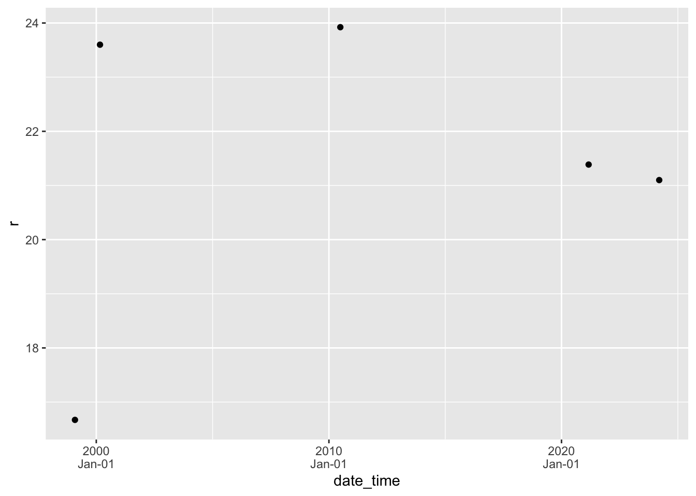

my_string <- " A cat is a small
and furry animal. "
my_string2 <- str_squish(my_string)
my_string2[1] "A cat is a small and furry animal."In this lesson I’ll show you how to work with the most common non-numeric data. Text (called strings) is composed of a sequence of characters (letters plus spaces, numbers, punctuation, emoij, and other symbols) that is not interpreted by R. In data visualization and statistics, strings can be interpreted as categorical data which usually means that there is a mapping from a set of text strings to natural numbers. The categories can be considered as ordered or unordered; when they are unordered, R usually arranges them in alphabetical order. Dates and times have familiar purposes in natural language, but there are many ways to represent them. Working with dates and times in computing is surprisingly complicated.
When making visualizations, you will often want to manipulate text strings before displaying them. Sometimes this is to simplify text that is being displayed on a graph. Or perhaps there is a typographical error or formatting problem with text. The stringr package contains many useful functions for manipulating text strings. I will explain a few simple examples that I use frequently.
str_squish function removes whitespace (spaces, tabs, and new lines) in these positions.my_string <- " A cat is a small
and furry animal. "
my_string2 <- str_squish(my_string)
my_string2[1] "A cat is a small and furry animal."str_to_lower(my_string2)[1] "a cat is a small and furry animal."str_to_upper(my_string2)[1] "A CAT IS A SMALL AND FURRY ANIMAL."str_to_sentence(my_string2)[1] "A cat is a small and furry animal."str_to_title(my_string2)[1] "A Cat Is A Small And Furry Animal."str_remove function can accomplish this. You can match literal strings or on patterns. Patterns allow for the use of character classes, selecting specific sequences, and more complex symbolic descriptions of strings. I will give a couple of simple examples of patterns. str_remove matches only once; str_remove_all matches the pattern as many times as possible.str_remove(my_string2, "cat")[1] "A is a small and furry animal."str_remove_all(my_string2, "[aeiou]")[1] "A ct s smll nd frry nml."str_remove_all(my_string2, "[ ,\\.!]")[1] "Acatisasmallandfurryanimal"(The . is a special pattern character representing any character; to match a literal . you need to write \\.)
as.numeric to convert the text to numbers. Any string that can’t be interpreted as a number will be converted to NA.text_and_numbers <- tibble( text = c("Andrew", "33", "12.45",
"-1.00", "Inf"))
text_and_numbers %>% mutate(numbers = as.numeric(text),
integers = as.integer(text)) %>% kable()| text | numbers | integers |
|---|---|---|
| Andrew | NA | NA |
| 33 | 33.00 | 33 |
| 12.45 | 12.45 | 12 |
| -1.00 | -1.00 | -1 |
| Inf | Inf | NA |
str_extract allows you to write a pattern that matches part of the string and extract that from the source material.sets <- c("A1", "A2", "B1", "B4", "C5")
str_extract(sets, "[0-9]")[1] "1" "2" "1" "4" "5"str_extract(sets, "[A-Z]")[1] "A" "A" "B" "B" "C"Thinking about patterns is a lot of work and prone to error, so the pair of functions glue and unglue were created to perform common tasks of combining text and data and then to separate them again.
library(glue)
library(unglue)
a <- 1
b <- 6
c <- 15.63
my_string3 <- glue("The numbers a, b, and c are {a}, {b}, and {c}, respectively. Their sum is {a+b+c}.")
my_string3The numbers a, b, and c are 1, 6, and 15.63, respectively. Their sum is 22.63.unglue(my_string3, "The numbers a, b, and c are {a}, {b}, and {c}, respectively. Their sum is {d}.")$`1`
a b c d
1 1 6 15.63 22.63my_strings1 <- tibble(greeting = c("My name is Andrew.",
"My name is Li.",
"My name is Emily."))
unglue_unnest(my_strings1,
greeting,
"My name is {name}.",
remove=FALSE) %>% kable()| greeting | name |
|---|---|
| My name is Andrew. | Andrew |
| My name is Li. | Li |
| My name is Emily. | Emily |
Factors are categorical variables in which a set of text labels are the possible values of a variable. These are sometimes interpreted as integers and sometimes interpreted as text. In data visualization, our primary concern is mapping factors on to sequence of colours, shapes, or locations on an axis. In R, if a factor is not given an explicit order by the analyst, but must have an order (on a scale), this is usually alphabetical. This ordering is rarely the best one for visualizations!
The forcats package has a series of functions for reordering factors. These can be used to explicitly reorder a factor by value (level) or a quantitative value can be used to reorder a factor.
Here are a few examples using the mpg data set. First a visualization without any explicit reordering of factors. Notice the factors on the vertical axis are arranged alphabetically with the first one at the bottom of the axis (the order follows the usual increase along the y-axis since the factors are interpreted as the numbers 1, 2, 3, … on the visualization.)
mpg %>% ggplot(aes(x = cty,
y = trans)) +
geom_boxplot()
Next we reorder the transmission categorical variable according to the minimum value of highway fuel economy. The three arguments to fct_reorder are the categorical variable to be reordered, the quantitative variable to use for the reordering, and a function that converts a vector of numbers to a single value for sorting (such as mean, median, min, max, length). The smallest value is plotted on the left of the horizontal axis or the bottom of the vertical axis. The option .desc=TRUE (descending = TRUE) is an easy way to reverse the order of factors and is especially useful for the vertical axis.
mpg %>% ggplot(aes(x = cty,
y = fct_reorder(trans, hwy, median, .desc=TRUE))) +
geom_boxplot() 
You should to practice working with strings and factors to develop flexible methods of customizing your display of categorical variables.
Next we extract the number of gears from the transmission and reorder transmission on this basis.
mpg %>% unglue_unnest(trans, "{trans_desc}({trans_code})",
remove=FALSE) %>%
mutate(gears = str_extract(trans_code, "[0-9]") %>% as.numeric()) %>%
ggplot(aes(x = cty,
y = fct_reorder(trans, gears))) +
geom_boxplot() 
When there are too many cateogories to display on a graph, it can be helpful to pick out the ones with the most observations and to group the remaining observations together in an “other” category. Here’s how you can accomplish that.
mpg %>%
ggplot(aes(x = cty,
y = fct_lump(trans, 4))) +
geom_boxplot() 
You can also use this function to keep the rare categories and lump the common ones, or group all categories appearing more or less often that some proportion of all observations. See the help for this function for details.
Dates and times are complex data to work with. Dates are represented in many formats. Times are reported in time zones, which change depending on the time of year and the location of the measurement. Dates are further complicated by leap years and local rules operating in specific countries. Special formatting is required for labelling dates and times on plots.
The package lubridate contains many functions to help you work with dates and times. For data visualization purposes I mostly use functions to parse dates and times (converting text to a date-time object), perform arithmetic such as subtracting dates to find the time difference, extract components of a date, and format axis labels.
To see some nicely formatted dates and times, use the today and now functions. When reporting times, you need to pick a time zone. This can be surprisingly complicated, especially since the time zone used in a particular location changes (daylight savings time) and according to changes in local regulations and legislation. For example, as I write these notes the “Atlantic/Halifax” time zone corresponds to AST (Atlantic Standard Time), but when you read the notes, the same time zone will be ADT (Daylight time.) We don’t use the three letter codes for time zone (except as an abbreviation when displaying the time), because there are multiple meanings for some three letter codes. Many people report time in UTC (referenced to longitude 0, Greenwich UK, but without the complexity of daylight savings time) to make times a bit easier. Of course, the date in UTC may not be the date where you are right now (it could be ‘yesterday’ or ‘tomorrow’), so be on the lookout for that!
today()[1] "2022-08-31"now() # for me this is: now(tz = "America/Halifax") [1] "2022-08-31 20:02:23 ADT"now(tz = "UTC")[1] "2022-08-31 23:02:23 UTC"There are a family of functions ymd, dmy, mdy, and ymd_hms among others that are used to turn text (such as in a table you read from a file) into a date. I strongly encourage the use of ISO 8601 date formatting. Illegal dates are converted to NA_Date and displayed as NA.
dt1 <- tibble(text_date = c("1999-01-31", "2000-02-28", "2010-06-28",
"2024-03-14", "2021-02-29"),
date = ymd(text_date))Warning: 1 failed to parse.dt1 %>% kable()| text_date | date |
|---|---|
| 1999-01-31 | 1999-01-31 |
| 2000-02-28 | 2000-02-28 |
| 2010-06-28 | 2010-06-28 |
| 2024-03-14 | 2024-03-14 |
| 2021-02-29 | NA |
Here is an example with times. You can specify a time zone if you want, but sometimes you can get away with ignoring the problem. Here the timezone information tells the computer how to interpret the text representation of the time.
dt2 <- tibble(text_date = c("1999-01-31 09:14", "2000-02-28 12:15",
"2010-06-28 23:45",
"2024-03-14 07:00 AM", "2021-03-01 6:16 PM"),
date_time = ymd_hm(text_date, tz="America/Halifax"))
dt2 %>% kable()| text_date | date_time |
|---|---|
| 1999-01-31 09:14 | 1999-01-31 09:14:00 |
| 2000-02-28 12:15 | 2000-02-28 12:15:00 |
| 2010-06-28 23:45 | 2010-06-28 23:45:00 |
| 2024-03-14 07:00 AM | 2024-03-14 07:00:00 |
| 2021-03-01 6:16 PM | 2021-03-01 18:16:00 |
These functions are remarkably powerful, for example they work on formats like this:
tibble(date = c("Jan 5, 1999", "Saturday May 16, 70", "8-8-88",
"December 31/99", "Jan 1, 01"),
decoded = mdy(date)) %>% kable()| date | decoded |
|---|---|
| Jan 5, 1999 | 1999-01-05 |
| Saturday May 16, 70 | 1970-05-16 |
| 8-8-88 | 1988-08-08 |
| December 31/99 | 1999-12-31 |
| Jan 1, 01 | 2001-01-01 |
As many people working in the late 20th century discovered, you should be very careful with two digit years. Best not to use them.
If you want to know how much time has passed since the earliest observation in a dataset, you can do arithmetic. Note the data types of each column (chr = character, date, time, dbl = double = numeric, drtn = duration).
dt1 %>% arrange(date) %>%
mutate(elapsed = date - min(date, na.rm=TRUE),
t_days = as.numeric(elapsed))# A tibble: 5 × 4
text_date date elapsed t_days
<chr> <date> <drtn> <dbl>
1 1999-01-31 1999-01-31 0 days 0
2 2000-02-28 2000-02-28 393 days 393
3 2010-06-28 2010-06-28 4166 days 4166
4 2024-03-14 2024-03-14 9174 days 9174
5 2021-02-29 NA NA days NALet’s add some random data to the second table and make a scatter graph. Special codes are used to format dates and times, but these are fairly well standardized (see the help for strptime).
dt2 %>% mutate(r = rnorm(n(), 20, 3)) %>%
ggplot(aes(x = date_time, y = r)) +
geom_point() +
scale_x_datetime(date_labels = "%Y\n%b-%d")
There are lots more options for formatting date and time axes. See the help pages for more (in particular the examples, as always).
Data are often missing. Missing data are encoded as NA in R, but occasionally you need to know a bit more than this. There are a few ways you can get tripped up with missing data.
If you read data from a csv or spreadsheet, an empty cell (and sometimes “NA”) will be interpreted as missing data. If some other value is used to represent NA, then you can use the option na = in read_csv or read_excel. (read_excel only converts blank values into NA unless you specify that the text ‘NA’ is a missing value and should be turned into NA.)
Any arithmetic computation with an NA will result in an NA result.
1 + NA[1] NAInf + NA[1] NANA/0[1] NAlog(NA)[1] NAWhen we use functions that turn a vector into a single number (mean, min, median, etc.), sometimes we want to ignore missing values. This is because we have at least two different ways of thinking about missing values: missing values should be ignored versus missing values are important signals of data. The option na.rm= is useful here.
dt3 <- tibble(x = c(1, 5, 9, 14.5, NA, 21, NA))
dt3 %>% summarize(mean_with_NA = mean(x),
mean_no_NA = mean(x, na.rm = TRUE))# A tibble: 1 × 2
mean_with_NA mean_no_NA
<dbl> <dbl>
1 NA 10.1If you want to know the number of observations, non-missing or missing data, use n or the idiom sum(!is.na(...)) and sum(is.na(...)) The exclamation mark (!, sometimes called bang) means logical not so !is.na means not missing.
dt3 %>% summarize(n_with_NA = n(),
n_no_NA = sum(!is.na(x)),
n_is_NA = sum(is.na(x)))# A tibble: 1 × 3
n_with_NA n_no_NA n_is_NA
<int> <int> <int>
1 7 5 2There are special functions n_missing, n_complete and more in the skimr package but I sometimes forget these and use the sum(...) calculations above.
dt3 %>% summarize(n_with_NA = n(),
n_no_NA = skimr::n_complete(x),
n_is_NA = skimr::n_missing(x))# A tibble: 1 × 3
n_with_NA n_no_NA n_is_NA
<int> <int> <int>
1 7 5 2If you have missing data in one or more columns and want to remove all observations from a table that have missing data, you can use na.omit.
na.omit(dt3)# A tibble: 5 × 1
x
<dbl>
1 1
2 5
3 9
4 14.5
5 21